Vision Point II app Basics
Using Vision Point II app
This section describes the basic setup for connecting and configuring the PCI Interface and connected Cameras. The basic steps include:
-
Opening selected PCI Interface (frame grabber).
-
Adjusting the PCI Interface parameters.
-
Scanning and adjusting the Local and Remote Devices parameters.
-
Creating streams.
-
Starting an image acquisition.
Working with the PCI Interface (Frame Grabber)
A Vision Point II app requires selecting a KAYA Frame Grabber target board among the available.The target board is selected from the Device panel. To start work with a target board:
After successful opening, the indicator icon will light up green, indicating that the Frame Grabber is ready to use.An example of Frame Grabber selection is shown in the following figure.
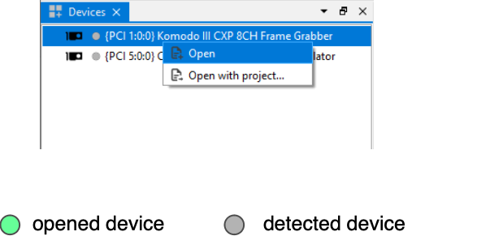
Figure
7 – Selecting the Frame Grabber
Adjusting the PCI Interface (Frame Grabber) parameters
The Frame Grabber configurations contain its related features and controls. Hardware information, stream state, I/O definition, and more can be modified using the standard Gen<i>Cam interface. Descriptions for each feature are available through tooltips in the Vision Point II app.Different boards may include different feature sets.The Frame Grabber features can be configured under the PCI Interface tab in the project dialog, as shown in below.
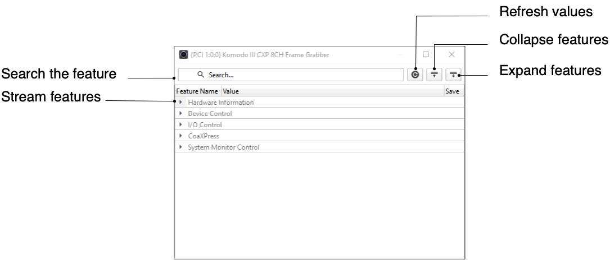
Figure
8 – Adjusting the PCI Interface features
Adjusting the Local Device parameters
The Local Device configuration contains many features. Some of them are standard CoaXPress features; some are camera dependent and, some affect the image type and geometry. Local Device parameters are actually on the grabber's side but logically relate to a remote camera. Before starting the image acquisition, the camera should be modified to the desired configurations or simply left with the default ones.The features can be configured under the Local Device tab in the project dialog, as shown in Figure
9.Please refer to your camera manufacturer manual for a description of the camera features.
Figure
9 – Adjusting the Local Device features
Adjusting the Remote Device parameters
The Remote Device configuration contains many features, some of which are standard CoaXPress features; some are camera dependent and, some affect the image type and geometry. Before starting image acquisition, the Camera should be modified to the desired configurations or left with the default ones.The features can be configured under the Remote Device tab in the project dialog, as shown in Figure
10.Please refer to your camera manufacturer manual for a description of the camera features.
Figure
10 – Adjusting the Remote Device features
Adjusting the Stream parameters
The Stream configuration contains many features. It allows to configure stream parameters, e.g. Image transformation (pixel format, width, height) and Stream statistic counters.The features can be configured under the Stream tab in the project dialog, as shown in Figure
11.
Figure
11 – Adjusting the Stream features
Camera Command Timeout control
The Camera Command Timeout can be configured for a particular camera. Before camera detection, the Camera Command Timeout should be increased for cameras with a longer initialization period than the default value. For multiple camera detection, the Camera Command Timeout should be modified for all the cameras, according to the camera with the longest initialization period, to ensure proper camera detection. This PCI Interface feature is located under the Device Control tab - Device control category.
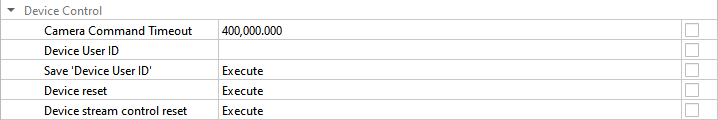
Figure
12 – Command Timeout Control
Scanning for connected Cameras
To initiate a camera scan, use the Scan Devices on all PCI Interfaces button on the Toolbar menu or Scan devices command from the Frame Grabber’s context menu (right mouse button click).The Frame Grabber links should first be scanned to detect the connected cameras to successfully connect a Camera to the Frame Grabber. The number of simultaneously connected cameras depends on the capabilities of the frame grabber while there is no constraint on the order of link connectivity or the default speed of the camera. Connected cameras will appears under the scanned Frame Grabber.
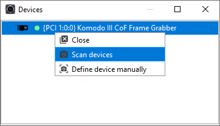
Figure
13 – Camera scanning
Define device manually
This operation can be used instead of full camera discovery process when connection topology and speed are known in advance, and user doesn’t want to reset camera (which happens in case of full discovery process). Generally, this method is much faster and less restrictive. Instead of "trial and error" process when different connection speeds and topologies are probed until channel synchronization is detected, and link roles and IDs are received from connected camera(s), the user knows how the camera(s) are connected and their connection speeds and wants to configure frame grabber accordingly to this knowledge.This approach is useful in situations such as:• The connection topology is known, and the user wants to save a time on full discovery process.• Debugging when automatic detection fails.• Need to skip the camera reset/initialization process.To define a device manually, right-click the Frame Grabber in the device list and select Define Device Manually from the context menu.
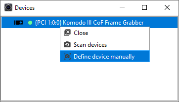
Figure
14 – Define device manually
-
In opened window select required parameters for expected device: number of links, operating speed and camera to frame grabber channels relations.
-
If more than one camera is expected use the Add Device button and repeat first step for each expected camera.
-
Click Next.
-
Verify the parameters and click Finish to complete the remote device definition.
The procedure is shown in Figure
15.The "No device access" option should be enabled when no communication with the camera is possible or desired.For example, when connection with a camera allows only receiving data, so sending commands is not possible. In this case, the connection topology (link roles and IDs) will not be verified.
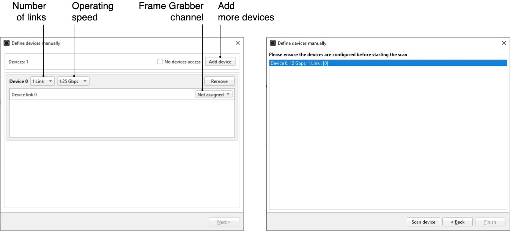
Figure
15 – Define device manually configuraionUser will receive a message "No devices found" in two cases:• Frame grabber channels are not synchronized according to the defined connection speed(s).• Option "No devices found" is not used and the actual connection topology (link roles and IDs) do not match those defined by user.
Open/Close selected Camera
Open/Close selected camera allows the user to open/close a specific Camera. The Open/Close command is in the context menu and applies only on the currently selected Camera. When the Camera is open, its indicator color will be changed to green. Features Panel will appear.
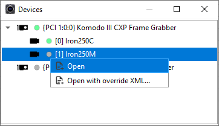
Figure
16 – Open the CameraThe Close command will appear in the context menu after Camera was opened. The Open command will appear after Camera is closed.
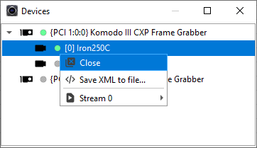
Figure
17 – Close the Camera
Save Camera XML to file
Use this option to export the camera’s XML file. Find this command in the camera’s context menu (right mouse button click).
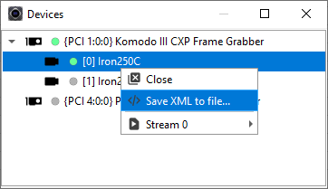
Figure
18 – Save Camera XML to file
Override Camera XML file
To override the Camera's native XML file, first the Open with Override XML command, located in the frame grabber’s context menu, should be checked and a legitimate XML file is to be selected. If not checked, the Frame Grabber will try to retrieve the native XML file from the Camera. This can be seen in Figure
19. Following this, a Camera scan can be initiated.
WARNING: Override XML re-sets all previous parameters to their default values. The user is responsible to re-set all needed parameters after XML is re-loaded.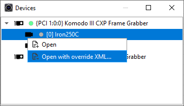
Figure
19 – Override Camera XML
Creating Stream
To create stream for the particular Camera
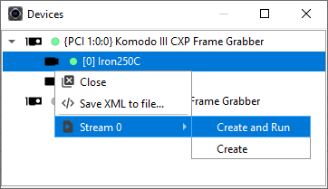
Figure
20 – Creating the streamStream tab will be opened.
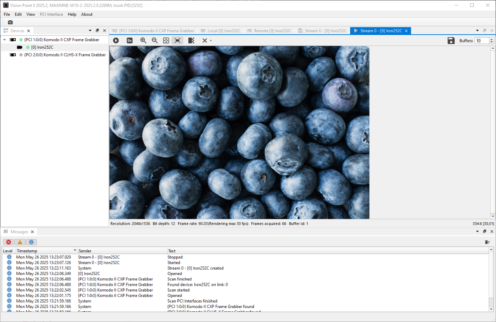
Figure
21 – Stream window
Multiple Stream
Vision Point II supports CoaXPress cameras with the multiple stream feature.Multiple stream is the ability of the camera to transmit several independent streams, each of which opens in a separate window and has its own settings, statistics etc.If the Camera supports multi-stream, the list of available streams will appear in the context menu.To create a stream for the particular Camera:
-
Press the Create and Run command from the Camera context menu (right mouse button click) to create a stream with previously saved settings. Acquisition will start.
-
Or Create to configure the setting before starting the stream.
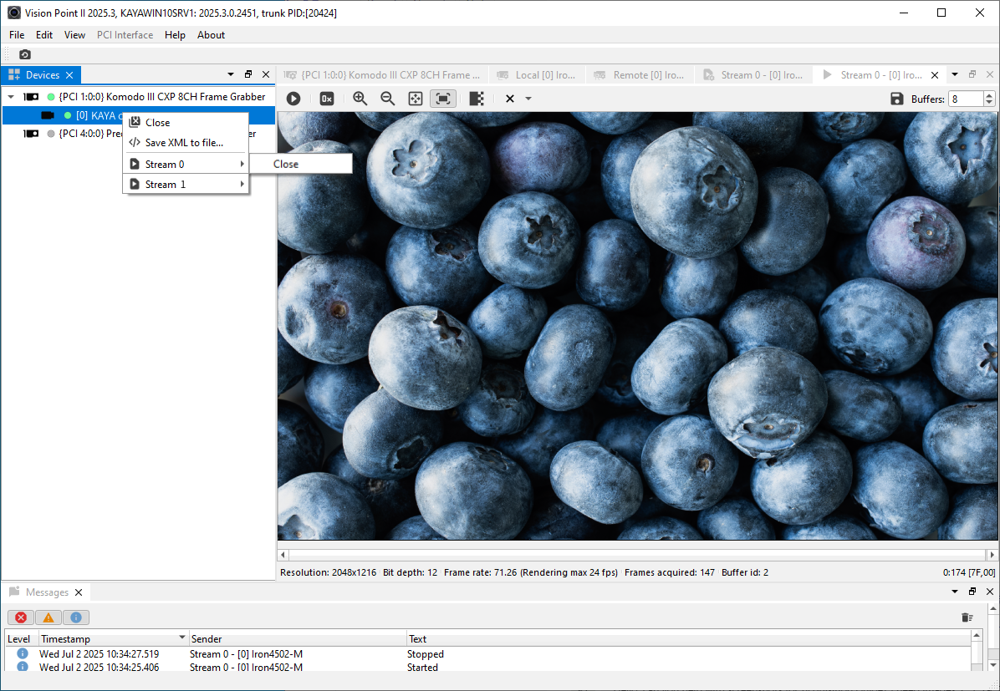
Figure
22 – Multile streams creation
The Source Selector feature
To control features for each stream source independently, even if the features belong to different categories, use the SourceSelector feature. It is located in the Remote Device panel under the Image Format Control section.For example, it allows user to adjust the Height/Width and Pixel Format features for multiple separate streams on the same device.
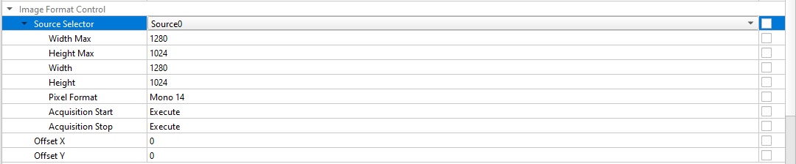
Figure
23 – Source Selector feature
Software debayering
The captured raw image from Camera sensors is black and white only.To display the stream image in rgb format use the Software debayering button from picture window toolbar (see section 6.14.1).
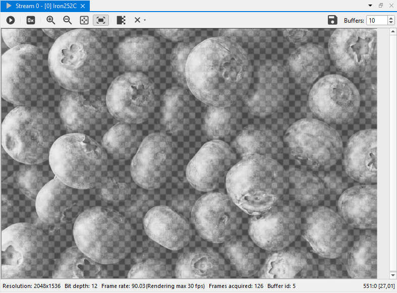
Figure
24 – Debayering mode off
Stream Controlling
To start the acquisition, press the .To stop the acquisition, press the .
The Acquisition picture window includes stream acquisition and image dimensions control buttons. After the stream acquisition commenced, acquisition can be controlled via the Picture window toolbar.The Picture window toolbar is shown in Figure
25 and includes the following components:
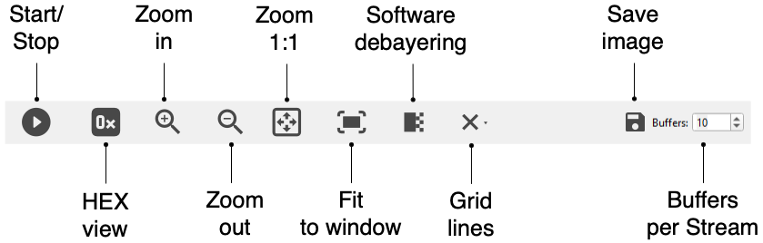
Figure
25 – Acquisition Picture Window toolbar
| Button | Button name | Description |
| | Zoom in | Zoom in on the image |
| | Zoom out | Zoom out on the image |
| | Original size | Re-set the image size |
| | Fit to video surface | Fit the image to the current acquisition picture window size |
| | Show hexadecimal values | Show hexadecimal values of the picture |
| | Start acquisition | Start acquisition of stream of a specific Camera |
| | Stop acquisition | Stop acquisition of stream of a specific Camera |
| | Software debayering | Display the stream image in rgb format |
| | Grid line | Overlay the image with one of several grid patterns |
 | Save image | Save a captured image |
| Buffers per Stream | The number of buffers that will be announced for the current stream |
Table 3 – Picture window toolbar buttons description
Grid Lines
The Grid Lines feature allows to overlay the image with one of several grid patterns to ease orientation. Centering the image on a target object is easily achieved using the grid in real-time.
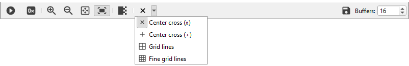
Figure
26 – Grid lines actionsThere are four possible patterns:
-
Center Cross (x) – see Figure 27 (A)
-
Center Cross (+) – see Figure 27 (B)
-
Grid lines – see Figure 27 (C)
-
Fine grid lines – see Figure 27 (D)
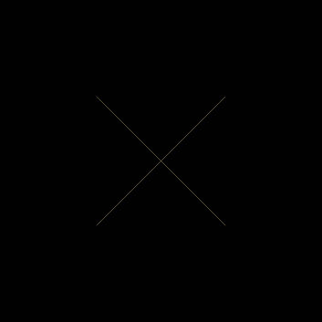
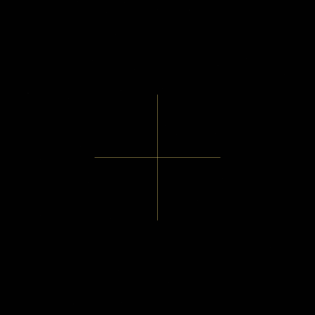
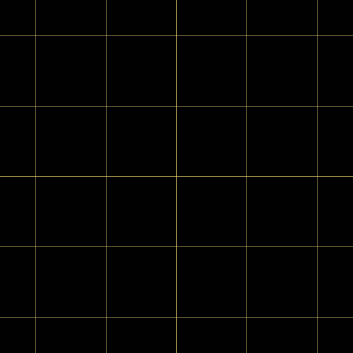
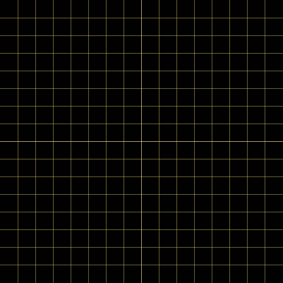
Figure
27 – Grid lines patterns
Buffers per Stream
The Buffers parameter defines the number of buffers that will be announced for the current Stream.
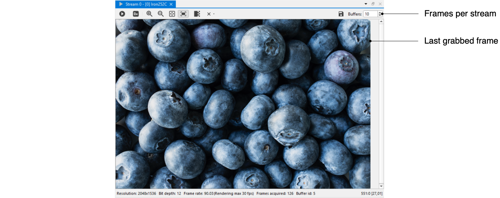
Figure
28 – Buffers per StreamThis setting must be configured before the Stream is started. If the number of buffers is not specified, the default value will be used.To change the default numbers of buffers, go to Edit/Settings/Acquisition Stream/Buffers per stream.
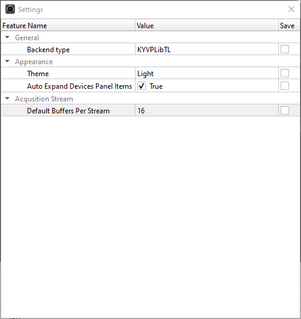
Figure
29 – SettingsThis parameter specifies the default number of buffers used for announcements in the stream.The number of buffers is limited only by the RAM (max. 65535).